The ultimate travel guide!
Can you think of anything more enjoyable than travelling? I didn't think so. Travelling is one of the best ways to broaden your horizons, meet new people, and experience fascinating cultures from around the world. It offers the perfect combination of adventure, discovery, and unforgettable memories. If you're passionate about travel, you've come to the right place. On this page, you'll discover some of the world's most popular and breathtaking destinations, helping you plan your next great adventure.
Top 5 Destinations to Travel to
Marrakesh (morroco) click to view more images
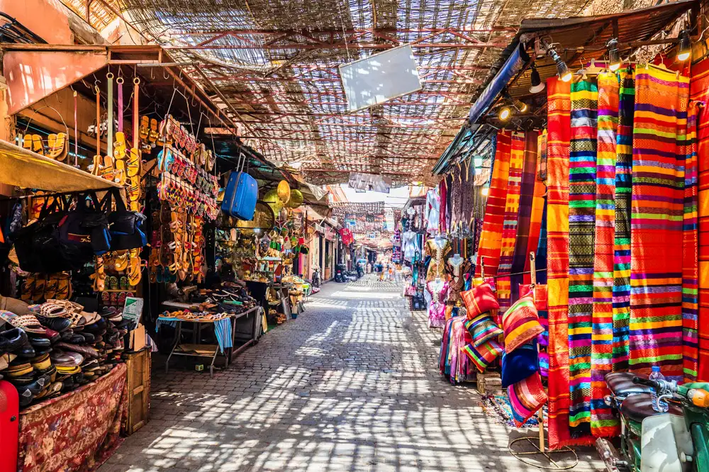
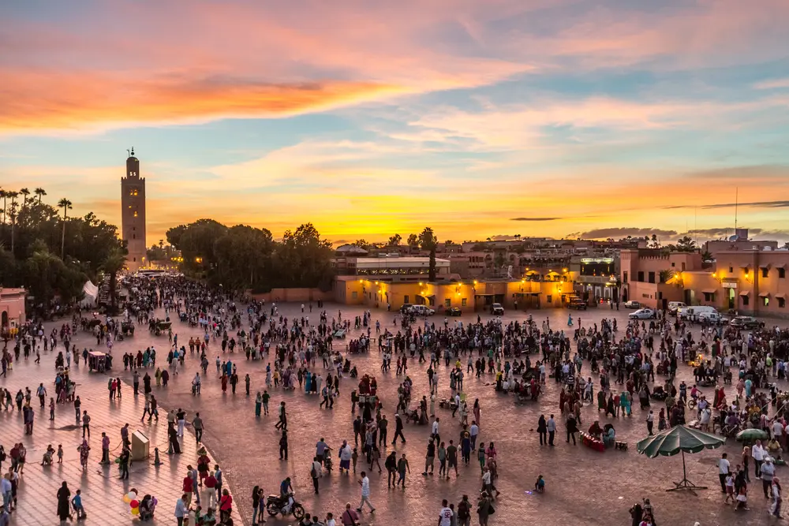
Marrakesh is one of Morocco's most vibrant and captivating cities, located at the foot of the Atlas Mountains in north-west Africa. Known as the "Red City" because of its distinctive red sandstone buildings, Marrakesh offers a unique blend of history, culture, and modern attractions. Visitors can explore bustling traditional markets known as souks, admire stunning palaces and mosques, and experience the lively atmosphere of Jemaa el-Fnaa square, the heart of the city. With its rich heritage, delicious cuisine, beautiful gardens, and warm hospitality, Marrakesh has become one of the most popular travel destinations in the world, attracting millions of visitors each year.
Things to do
During the day:
- Explore the bustling souks and shop for traditional Moroccan crafts.
- Visit the beautiful Majorelle Garden and enjoy its peaceful atmosphere.
- Tour the historic Bahia Palace and admire its stunning architecture.
- Visit the Koutoubia Mosque and learn about its cultural significance.
- Explore the Saadian Tombs and discover Marrakesh's rich history.
- Enjoy authentic Moroccan cuisine at a local restaurant.
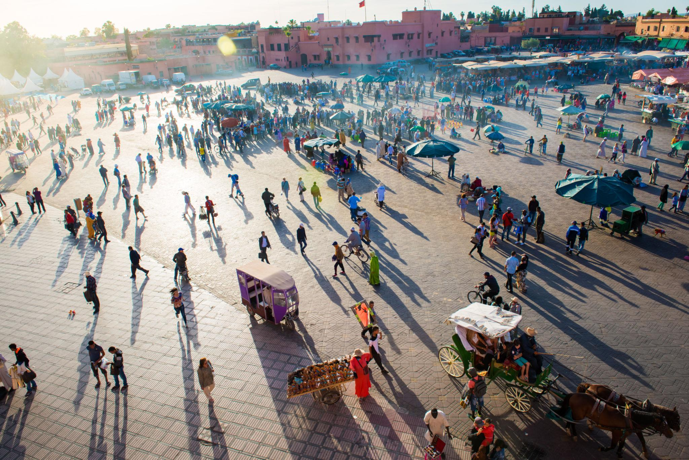
During the night:
- Experience the vibrant atmosphere of Jemaa el-Fnaa Square after sunset.
- Sample traditional Moroccan street food from local vendors.
- Watch street performers, musicians, storytellers, and entertainers.
- Enjoy dinner at a rooftop restaurant overlooking the city.
- Take an evening stroll through the illuminated Medina.
- Relax in a traditional Moroccan café and enjoy mint tea.
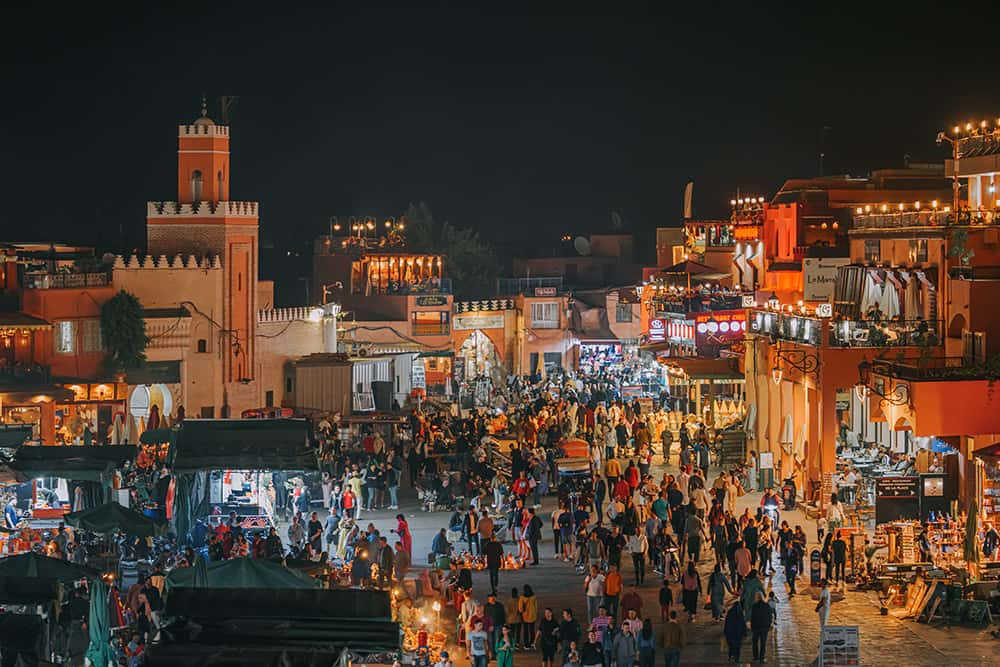
Places to visit:
- Jemaa el-Fnaa - The famous central square known for food stalls, performers, and markets.
- Majorelle Garden - A beautiful botanical garden famous for its vibrant blue buildings and exotic plants.
- Bahia Palace - A stunning 19th-century palace showcasing traditional Moroccan architecture.
- Koutoubia Mosque - Marrakesh's largest mosque and one of the city's most iconic landmarks.
12 Travel Tips
A little preparation can make your trip to Marrakesh even more enjoyable. Keep these useful travel tips in mind to ensure a safe, comfortable, and memorable experience.
- Carry cash, as many small shops and market stalls do not accept card payments.
- Be prepared to negotiate prices when shopping in the souks.
- Dress modestly to respect local customs and traditions.
- Stay hydrated, especially during the hot summer months.
- Learn a few basic Arabic or French phrases to help communicate with locals.
- Keep an eye on your belongings in crowded areas and markets.
- Use licensed taxis and agree on a fare before starting your journey if a meter is not being used.
- Visit popular attractions early in the morning to avoid large crowds.
- Try authentic Moroccan dishes such as tagine, couscous, and pastilla
- Carry sunscreen, sunglasses, and a hat to protect yourself from the strong sun.
- Respect local religious sites and follow any visitor guidelines.
- Be cautious when accepting offers from unofficial tour guides or street vendors.
Giza (Egypt) click to view more images
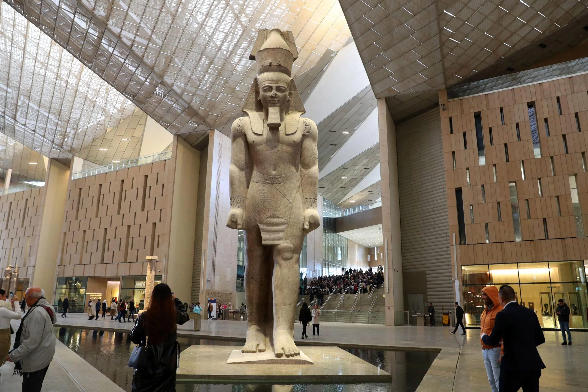
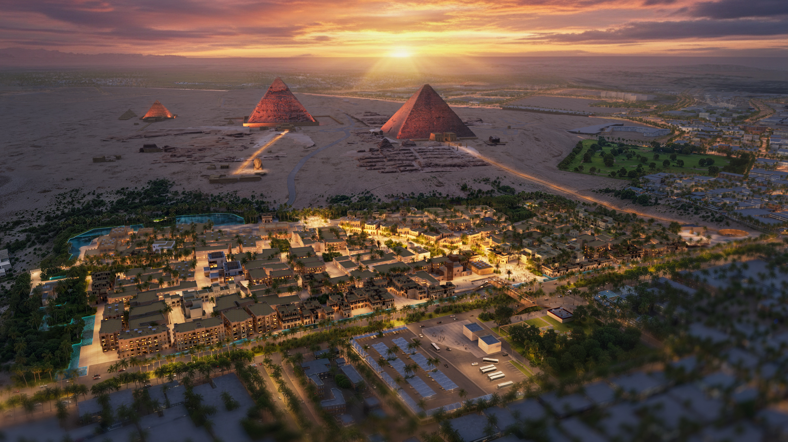
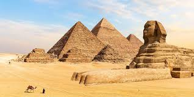
Giza is one of the world's most extraordinary travel destinations, where ancient history meets the energy of modern Egypt. Located on the west bank of the Nile River, just outside Cairo, Giza is home to some of humanity's greatest achievements, including the iconic Great Pyramids and the mysterious Sphinx. For thousands of years, travellers have journeyed here to witness these timeless wonders that continue to captivate the imagination.
Beyond its legendary monuments, Giza offers a rich cultural experience filled with authentic Egyptian cuisine, bustling local markets, and breathtaking desert landscapes. Whether you're exploring ancient tombs, riding a camel across the golden sands, or watching the sun set behind the pyramids, every moment in Giza tells a story of civilisation, discovery, and adventure. It is a destination that blends history, culture, and unforgettable experiences, making it a must-visit for travellers from around the globe.
Things to do
During the day:
- Visit the Great Pyramids of Giza and explore one of the Seven Wonders of the Ancient World.
- Stand before the legendary Great Sphinx of Giza
and learn about its fascinating history. - Enter one of the ancient pyramids to experience the inner chambers firsthand.
- Take a camel ride across the Giza Plateau for incredible desert views and memorable photos.
- Explore the Solar Boat Museum to see the reconstructed
vessel believed to have belonged to Pharaoh Khufu. - Hire a local guide for a historical walking tour of the archaeological site.
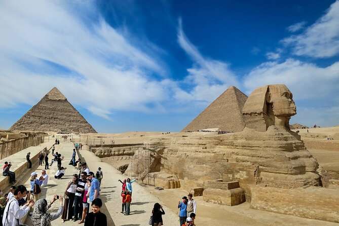
During the night:
- Enjoy dinner at a rooftop restaurant with breathtaking nighttime views of the illuminated pyramids.
- Take an evening stroll through local streets and experience the city's
lively atmosphere after sunset. - Take a Nile dinner cruise from nearby Cairo featuring entertainment and scenic city views.
- Enjoy dinner at a rooftop restaurant overlooking the city.
- Take an evening stroll through the local streets and experience
the city's lively atmosphere after sunset. - Enght by stargazing in the desert, away from the bustle of the city, for a truly unforgettable experience.

Places to visit:
- Great Pyramid of Giza - The oldest and largest of the three pyramids, and one of the Seven Wonders of the Ancient World..
- The Great Sphinx of Giza - A colossal limestone statue with the body of a lion and the head of a pharaoh.
- Giza Plateau - The entire archaeological complex containing the pyramids, the Sphinx, and several ancient tombs.
- Grand Egyptian Museum - One of the world's largest archaeological museums, housing thousands of ancient Egyptian artifacts.
12 Travel Tips
To make the most of your trip, it is important to plan ahead, stay comfortable in the hot climate,
and be aware of local customs. The following tips will help ensure your visit to Giza is enjoyable, safe, and stress-free.
- Visit the pyramids early in the morning to avoid the heat and large crowds.
- Wear lightweight, breathable clothing and comfortable walking shoes.
- Carry plenty of water to stay hydrated throughout the day.
- Bring sunscreen, sunglasses, and a hat to protect yourself from the strong sun.
- Keep small amounts of cash with you for tips, souvenirs, and local purchases..
- Be cautious of unofficial tour guides and use licensed guides whenever possible.
- Agree on taxi fares before beginning your journey if a meter is not being used.
- Keep your valuables secure, especially in busy tourist areas.
- Respect local customs by dressing modestly when visiting cultural or religious sites.
- Be prepared for lots of walking when exploring the Giza Plateau and nearby attractions.
- Don't miss the Sound and Light Show at the pyramids for a unique evening experience.
- Take plenty of photos, but remember to enjoy the incredible history and scenery around you.
Albufeira (portugal) click to view more images
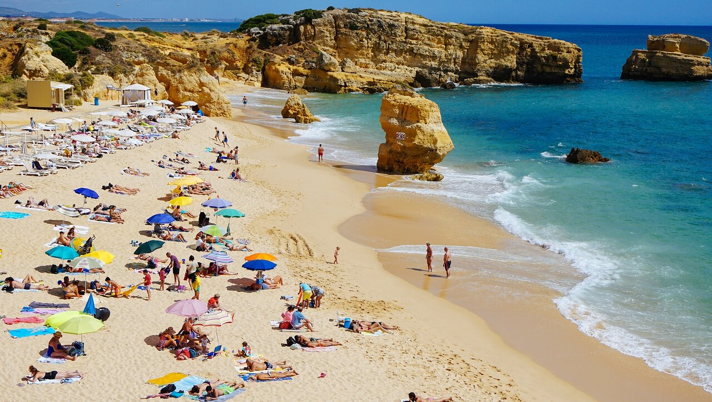
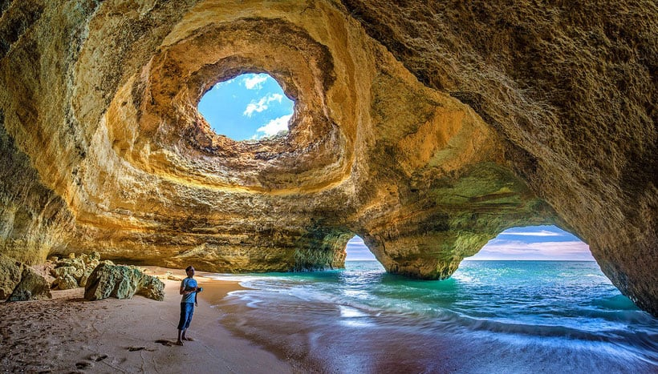
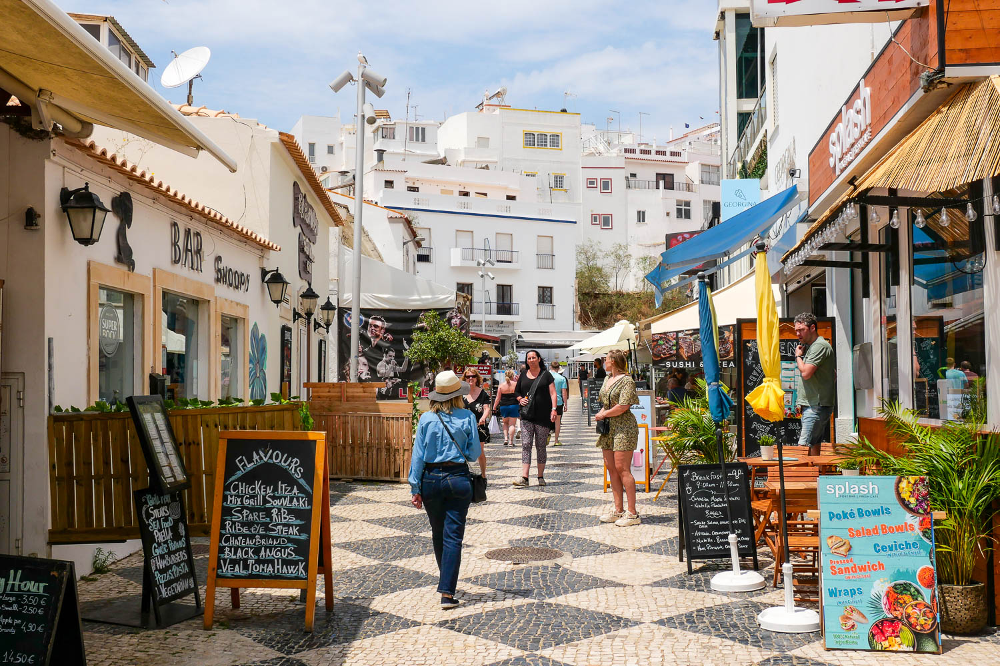
Located in the beautiful Algarve region of southern Portugal, Albufeira is one of the country's most popular holiday destinations. Known for its golden sandy beaches, crystal-clear waters, and vibrant atmosphere, the city attracts millions of visitors each year. Albufeira offers the perfect blend of relaxation, adventure, and culture, making it an ideal destination for families, couples, and solo travellers alike.
Visitors can spend their days exploring picturesque coastlines, enjoying water sports, or wandering through the charming Old Town, which is filled with traditional Portuguese architecture, shops, and restaurants. By night, Albufeira comes alive with a lively nightlife scene, featuring bars, live music, and entertainment for all tastes. With its year-round sunshine, stunning scenery, and welcoming atmosphere, Albufeira is a destination that offers something for everyone..
Things to do
During the day:
- Relax on the beautiful golden sands of Praia dos Pescadores Beach.
- Explore Albufeira's charming Old Town and its traditional Portuguese streets.
- Take a boat tour to discover the stunning sea caves and coastline.
- Visit the famous Benagil Cave, one of Portugal's most spectacular natural attractions.
- Enjoy a variety of water sports, including jet skiing, paddleboarding, and parasailing.
- Experience Albufeira's vibrant nightlife with its many restaurants, bars, and live entertainment venues.
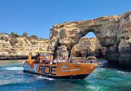
During the night:
- Enjoy dinner at a seaside restaurant and sample traditional Portuguese cuisine.
- Take an evening stroll through Albufeira's beautifully lit Old Town.
- Experience the lively atmosphere of The Strip, famous for its bars and entertainment.
- Watch live music performances at local pubs and venues.
- Relax with a drink at a rooftop bar while enjoying views of the coastline.
- Join a sunset boat cruise along the Algarve coast and admire the stunning scenery.
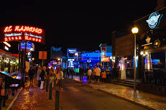
Places to visit:
- Albufeira Old Town - A charming historic district filled with traditional Portuguese architecture, shops, restaurants, and cobbled streets.
- Praia dos Pescadores - One of Albufeira's most famous beaches, known for its golden sands and stunning coastal views.
- Benagil Cave - A spectacular sea cave famous for its natural skylight and unique rock formations.
- Albufeira Marina - A vibrant waterfront area offering boat trips, restaurants, shops, and beautiful views of the Atlantic Ocean.
12 Travel Tips
Albufeira is a welcoming coastal destination known for its beautiful beaches, lively atmosphere, and sunny weather. To make the most of your visit, it is important to stay safe in the sun, respect local customs, and plan ahead during the busy tourist season. The following tips will help ensure your trip to Albufeira is enjoyable, relaxing, and memorable.
- Apply sunscreen regularly, especially during the summer months.
- Carry a reusable water bottle to stay hydrated throughout the day.
- Wear comfortable footwear if you plan to explore the Old Town.
- Book accommodation and activities in advance during peak season.
- Keep an eye on your belongings in crowded tourist areas.
- Try traditional Portuguese dishes such as grilled sardines and pastéis de nata.
- Arrive at popular beaches early to secure a good spot.
- Respect local residents by keeping noise levels down late at night.
- Use designated swimming areas and pay attention to beach safety flags.
- Bring a light jacket for cooler evenings by the coast.
- Take a boat tour to fully appreciate the Algarve's stunning coastline and sea caves.
- Don't forget your camera to capture the beautiful beaches, cliffs, and sunsets.
Sal (Cape Verde) click to view more images
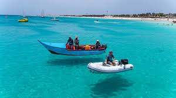
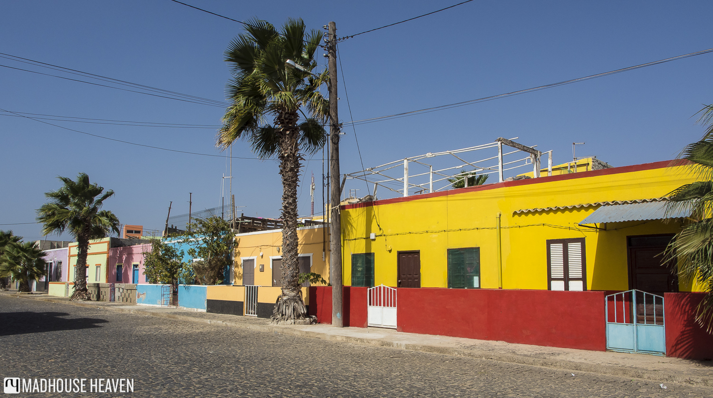
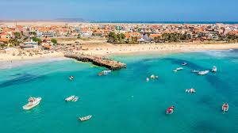
Sal is one of the most popular islands in Cape Verde, an island nation located off the west coast of Africa in the Atlantic Ocean. Famous for its year-round sunshine, stunning white-sand beaches, and crystal-clear turquoise waters, Sal is a paradise for beach lovers and adventure seekers alike. The island's relaxed atmosphere and warm climate make it an ideal destination for those looking to escape and unwind.
Visitors can enjoy a wide range of activities, from swimming and sunbathing to windsurfing, kite surfing, and scuba diving. The island is also home to the colourful town of Santa Maria, where travellers can experience local culture, fresh seafood, and lively entertainment. With its breathtaking coastline, friendly locals, and beautiful natural scenery, Sal offers the perfect combination of relaxation, adventure, and unforgettable holiday experiences.
Things to do
During the day:
- Relax on the stunning white sands of Santa Maria Beach.
- Take a swim in the crystal-clear waters of the Atlantic Ocean.
- Visit the colourful town of Santa Maria and explore its shops and cafés.
- Experience world-class kite surfing and windsurfing along the coast.
- Discover the natural wonder of Pedra de Lume and float in its salt crater.
- Go snorkelling or scuba diving to explore the island's vibrant marine life.
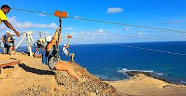
During the night:
- Enjoy fresh seafood and traditional Cape Verdean cuisine at a beachfront restaurant.
- Take an evening stroll along the Santa Maria Pier and waterfront.
- Watch the sunset over the Atlantic Ocean from Santa Maria Beach.
- Experience live Cape Verdean music and dancing at local bars and venues.
- Relax with a cocktail at a beach bar while listening to the sound of the waves.
- Explore Santa Maria's lively nightlife and enjoy its welcoming atmosphere.
Places to visit:
- Pedra de Lume Salt Crater - A unique volcanic crater filled with saltwater where visitors can float effortlessly, similar to the Dead Sea.
- Santa Maria - The island's main town, known for its colourful streets, restaurants, shops, and vibrant atmosphere.
- Buracona and the Blue Eye - A natural rock pool famous for its crystal-clear waters and the Blue Eye phenomenon created by sunlight.
- Kite Beach - One of the world's most popular spots for kite surfing, offering beautiful views and exciting water sports.
12 Travel Tips
Sal is a tropical island paradise known for its beautiful beaches, warm climate, and relaxed atmosphere. To make the most of your visit, it is important to stay protected from the sun, respect local customs, and plan activities around the island's weather conditions. The following tips will help ensure your trip to Sal is enjoyable, safe, and unforgettable.
- Apply sunscreen regularly, especially during the hottest hours of the day.
- Carry a reusable water bottle to stay hydrated in the warm tropical climate.
- Wear light, breathable clothing to stay comfortable in the heat.
- Bring a hat and sunglasses for extra protection from the strong sun.
- Keep an eye on your belongings when visiting busy beaches and tourist areas.
- Try traditional Cape Verdean dishes such as Cachupa, the country's national dish.
- Book water sports and island tours in advance during peak travel seasons.
- Respect local customs and be courteous when interacting with residents.
- Check sea conditions before swimming or taking part in water activities.
- Bring a light jacket for cooler evenings and coastal breezes.
- Visit the Pedra de Lume Salt Crater and don't miss the chance to float in the salt lake.
- Don't forget your camera to capture the island's stunning beaches, sunsets, and natural landscapes.
Tokyo (Japan) click to view more images
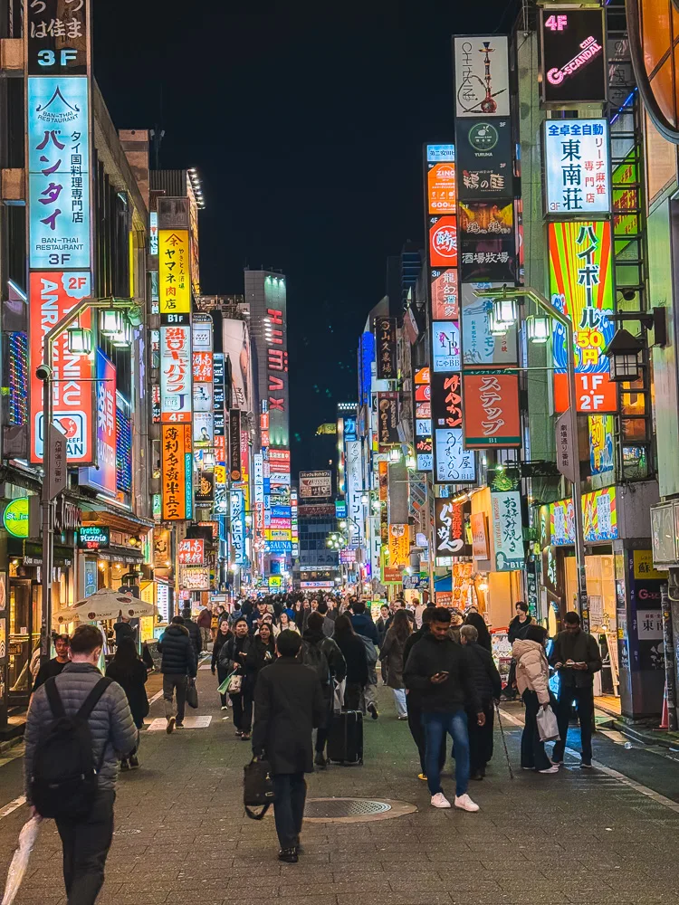
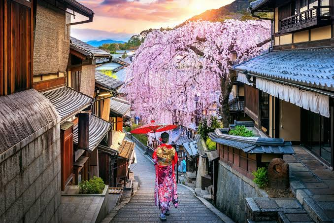
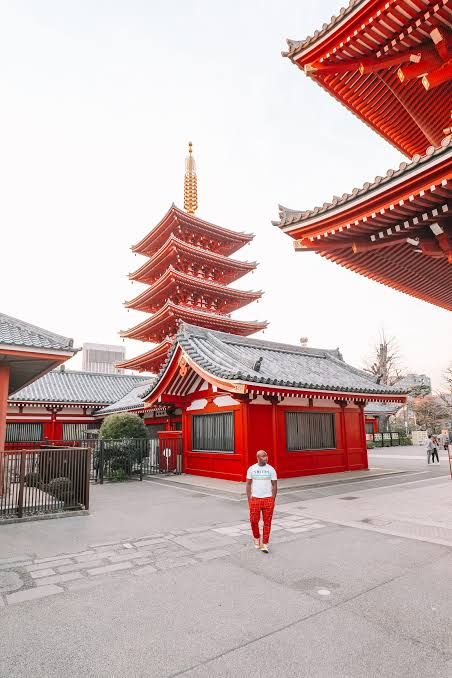
Tokyo is the vibrant capital of Japan and one of the world's most exciting and dynamic cities. Known for its unique blend of ancient traditions and cutting-edge technology, Tokyo offers visitors an unforgettable experience filled with iconic landmarks, bustling streets, and rich cultural heritage. From historic temples and tranquil gardens to dazzling skyscrapers and neon-lit entertainment districts, the city provides something for every type of traveller.
Visitors can explore famous attractions, enjoy world-class shopping, and sample some of the finest cuisine in the world, from fresh sushi to authentic ramen. Popular areas such as Shibuya, Shinjuku, and Asakusa showcase Tokyo's diverse character, combining modern innovation with centuries-old traditions. With its efficient transport system, welcoming atmosphere, and endless opportunities for discovery, Tokyo offers the perfect mix of culture, adventure, and unforgettable travel experiences.
Things to do
During the day:
- Explore the historic Senso-ji Temple and its traditional surroundings in Asakusa.
- Take in breathtaking views of Tokyo from the observation decks of Tokyo Skytree.
- Visit the vibrant district of Shibuya and experience its famous crossing.
- Enjoy shopping, dining, and entertainment in the bustling streets of Shinjuku.
- Discover the peaceful beauty of Meiji Shrine and its surrounding forested grounds.
- Visit Ueno Park and its museums, gardens, and cultural attractions.
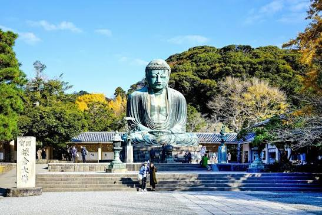
During the night:
- Experience the dazzling neon lights and nightlife of Shinjuku.
- Enjoy panoramic views of the city skyline from a rooftop observation deck.
- Explore the vibrant streets of Shibuya filled with restaurants, bars, and entertainment.
- Sample authentic Japanese cuisine at late-night eateries and izakayas.
- Visit Odaiba to enjoy waterfront views and illuminated city landmarks.
- Take a relaxing evening stroll through Tokyo's beautifully lit districts and parks.
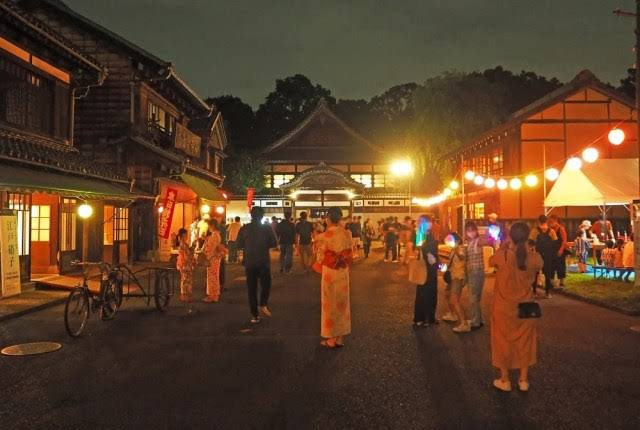
Places to visit:
- Senso-ji Temple - Tokyo's oldest and most famous Buddhist temple, known for its impressive architecture and traditional atmosphere.
- Tokyo Skytree - One of the tallest structures in the world, offering breathtaking panoramic views of Tokyo from its observation decks.
- Meiji Shrine - A peaceful Shinto shrine surrounded by a beautiful forest, providing a relaxing escape from the busy city.
- Shibuya - One of Tokyo's most iconic districts, famous for its bustling crossing, shopping, dining, and vibrant city life.
12 Travel Tips
Tokyo is a vibrant and fast-paced city that blends ancient traditions with modern innovation. To make the most of your visit, it is important to understand local customs, plan your journeys efficiently, and be prepared for busy attractions. The following tips will help ensure your trip to Tokyo is enjoyable, safe, and unforgettable.
- Purchase a transport card to make travelling on Tokyo's trains and buses quick and convenient.
- Carry some cash, as smaller shops and restaurants may not always accept cards.
- Wear comfortable walking shoes, as you will likely spend a lot of time exploring the city on foot.
- Be respectful of local customs and keep noise levels low on public transport.
- Visit popular attractions early in the day to avoid large crowds.
- Try traditional Japanese dishes such as sushi, ramen, and tempura.
- Keep a portable phone charger with you for maps, travel apps, and photos.
- Learn a few basic Japanese phrases to help when interacting with locals.
- Carry a small umbrella, as weather conditions can change unexpectedly.
- Follow local recycling and waste disposal rules when using public spaces.
- Visit famous landmarks such as Senso-ji Temple and Tokyo Skytree during your stay.
- Don't forget your camera to capture Tokyo's stunning skyline, historic temples, and vibrant city streets.